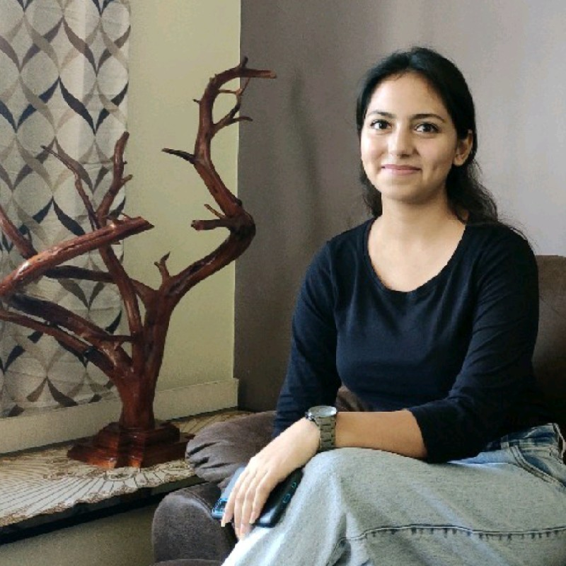
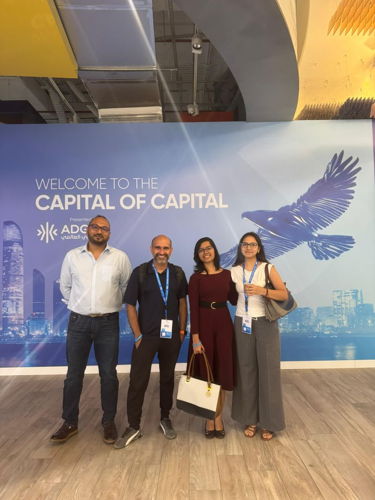
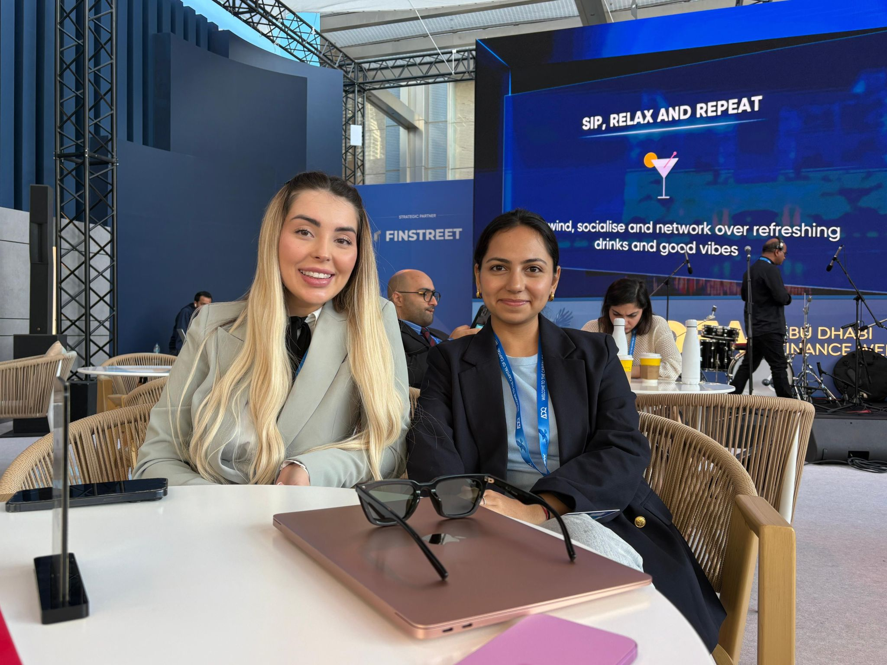
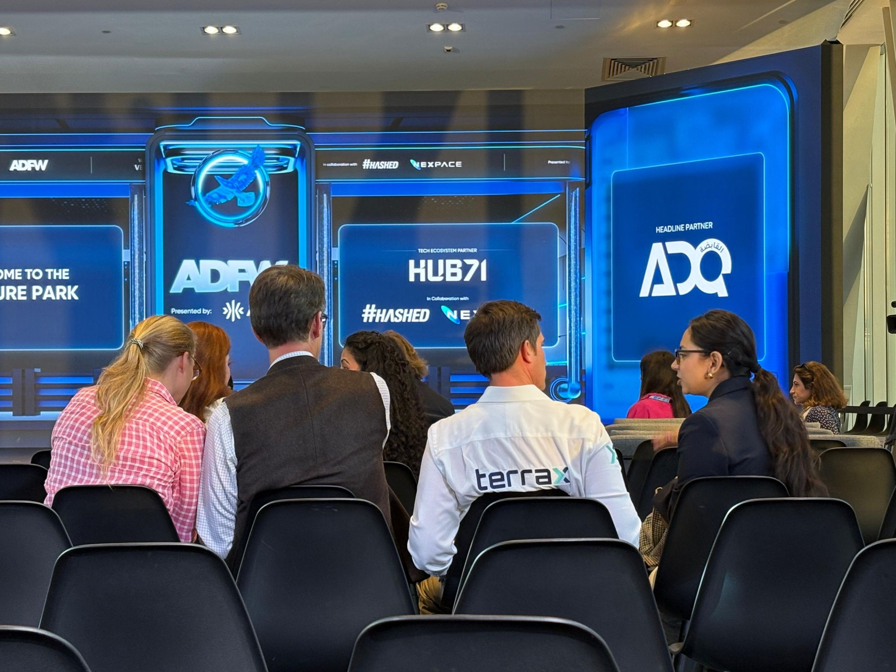
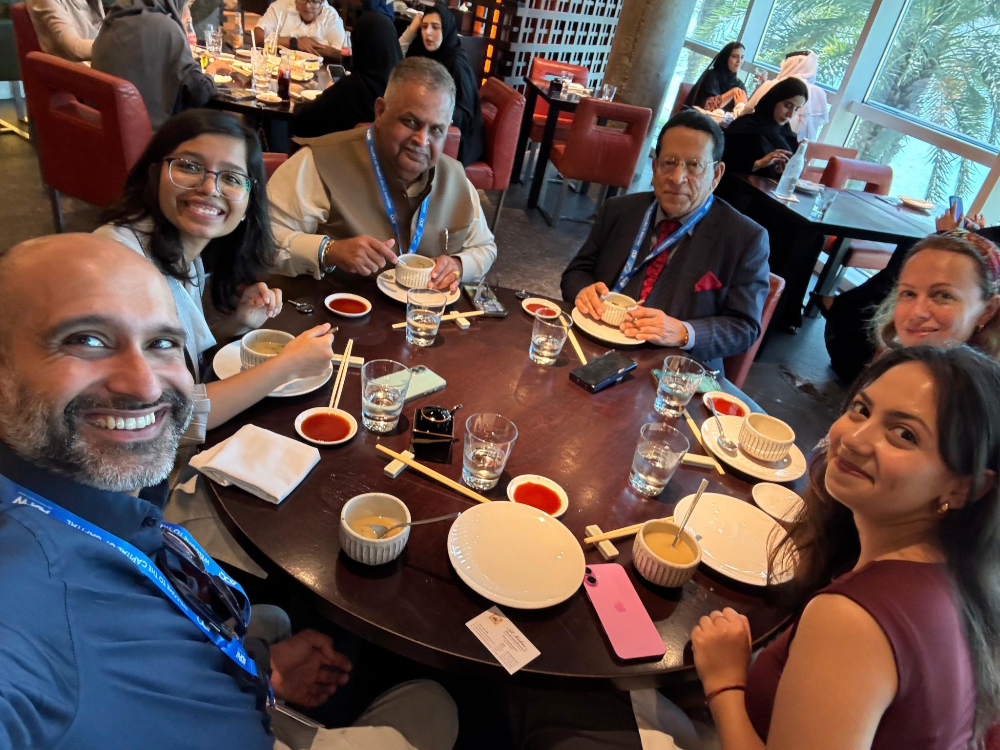
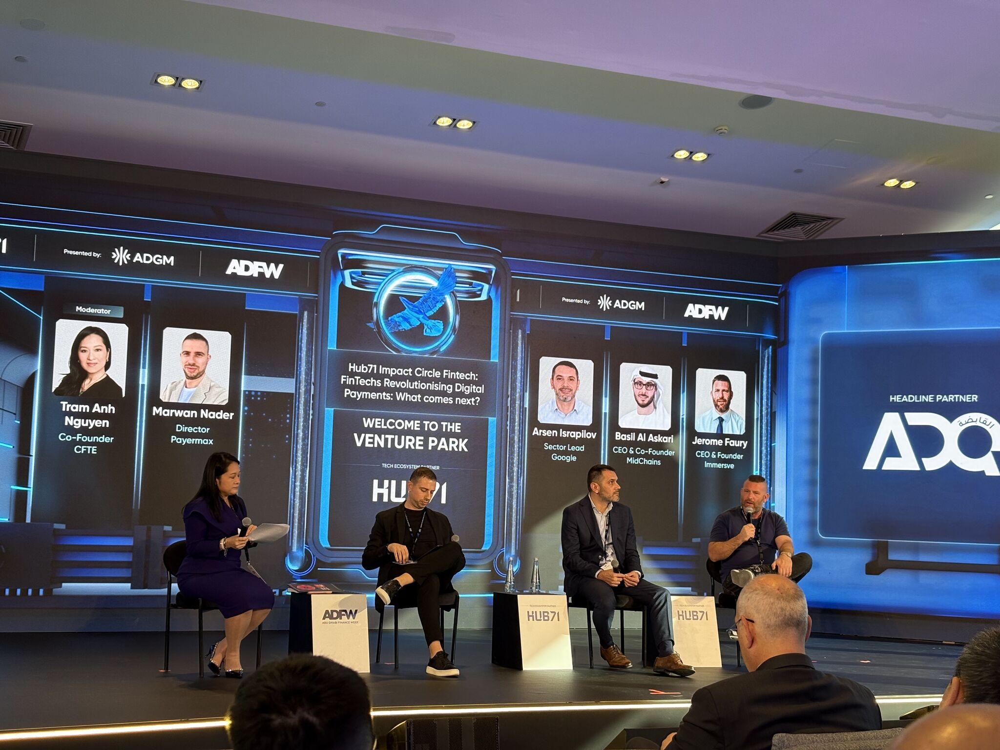
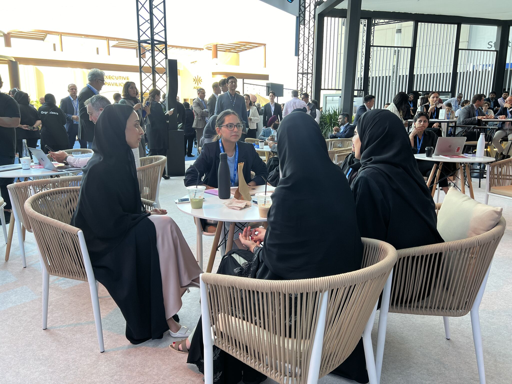

Product Engineer — AI & Distributed Backend Systems
I build AI-powered products end to end. I sit at the intersection of deep technical execution — Python, FastAPI, distributed systems, LLMs/RAG (LangChain, LangGraph, Langfuse) — and product ownership: I don't just build what's asked, I help decide what gets built.
Most recently, I contributed to the post-acquisition strategy and modernization of a multi-tenant enterprise engagement platform — serving 250+ customers across 27 social channels and processing 100M+ conversations/year — retiring legacy systems spanning 14 years of code and launching a successful pilot within 6 months of start, all while being the platform's core engineer and #1 contributor (~1,800 commits, 39% of the core codebase).
Get in touch
Blockchain-based federated learning replacing the central server with Motoko smart contracts; CNN model for pneumonia diagnosis from chest X-rays in TensorFlow/Keras.
A full product analysis of Iris — the what and why of unifying two legacy products into one modern workspace: product rationale, user impact, and platform strategy.
An architecture design doc working through a bulk-processing pipeline — payload constraints, Lambda invocation limits, and the trade-offs behind moving bytes out of the request path.
A plain-language explainer of the Model Context Protocol — what it is, why it matters, and how it connects LLM agents to real tools.
The product case for PKM — why personal data deserves its own AI layer, and what it unlocks for everyday digital life.
Behind the scenes of building the PKM: architecture choices, retrieval experiments, and lessons from the first iteration.
Continuing the build: GraphRAG, LightRAG, and LLM-generated queries compared in practice, with what worked and what didn't.
Reading LibreChat's system design as a 13-layer blueprint — why almost all the hard engineering in a production chatbot lives around the model, not in it.
A living Notion workspace where I document my research and thinking — AI market dynamics, enterprise ROI analysis, RAG architecture evaluation, AI-assisted system design, and more.
Thoughts on TerminalBench and what rigorous LLM evaluation actually looks like for AI agents working in real environments.
A productivity layer on Claude Code adding session management and multi-repo directory support — built to cut developer context-switching overhead, and shared with the community as an open-source project.
View on GitHub Read the announcementFiled an issue on an open-source GraphRAG project built on Neo4j — contributing back to the retrieval tooling I relied on while building the PKM system.
See the post





Represented Hushh AI at a key international finance forum — showcasing our AI-driven personal data products to investors and partners, and delivering technical demos of the product portfolio.
A few conversations and talks from my undergraduate years on topics that interested me outside the classroom.
A conversation with Tushar Shah on managing money and building things while still a student.
A conversation with psychologist Hemant Godara on meditation, therapy, and the realities of antidepressant medication.
Open to Product Engineer and Product Manager roles where deep technical expertise and product ownership both matter.
Book a call Email me LinkedIn